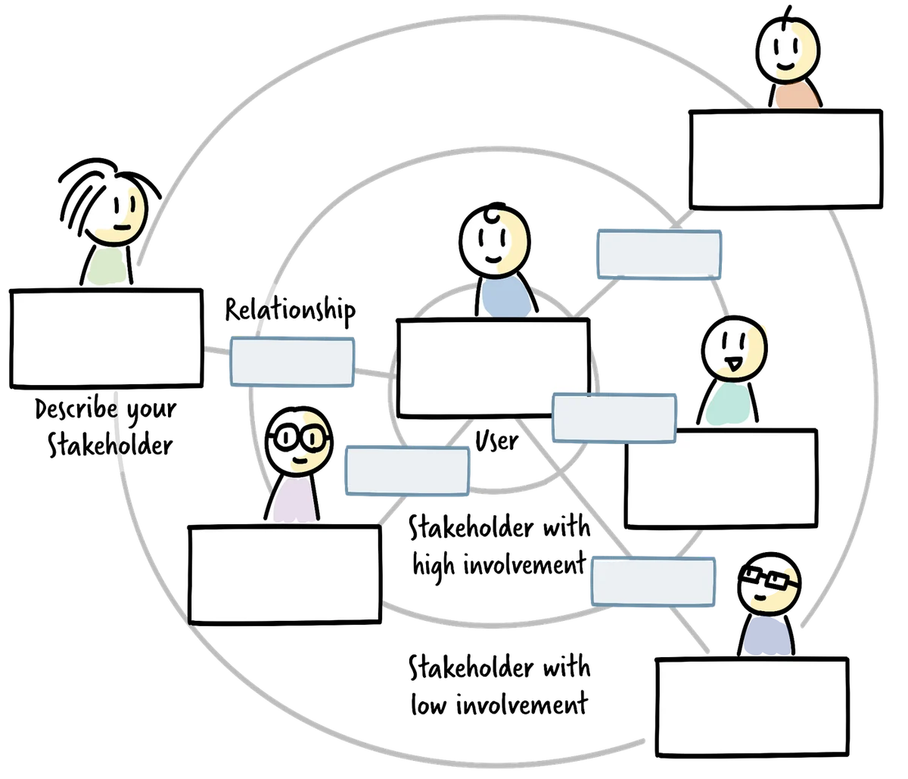

What this resource is for
In complex organisations, the people who are affected by, interested in, or able to influence a piece of work are rarely the same people who do it. Managing relationships with this broader group — stakeholders — is one of the most important and most neglected aspects of delivery leadership. When stakeholder management is absent or reactive, it shows up as surprises late in the delivery cycle, decisions that get overturned after they were thought to be settled, resources that are withheld or withdrawn, and support that fails to materialise when it is needed. This resource covers how to identify and segment stakeholders, how to build a stakeholder map, and how to use that map to design proactive communication and alignment practices.
Who is a stakeholder?
A stakeholder is anyone who has an interest in the outcome of your work, is affected by what you do or produce, or has the ability to influence your ability to deliver. This definition is deliberately broad. It includes obvious internal stakeholders — sponsors, product owners, leadership — but also less obvious ones: teams that depend on your output, teams whose output you depend on, regulatory or compliance functions, and end users who may have no formal relationship with your team but whose needs should shape your decisions.

One of the most common stakeholder management failures is defining the stakeholder group too narrowly. Teams often focus on the people who attend their reviews and sign off their work, while systematically neglecting the people who do not attend but are affected and may create friction later. Mapping stakeholders thoroughly — erring on the side of inclusion rather than exclusion at the identification stage — is the prerequisite for everything else.
Stakeholder segmentation
Once you have identified your stakeholders, the next step is to segment them — to organise them into groups that will receive different kinds of attention and communication. Segmenting stakeholders is not about valuing some people more than others; it is about recognising that different stakeholders have different needs, different relationships to your work, and different levels of risk if the relationship is mismanaged.
A stakeholder segmentation framework organises stakeholders along three key dimensions.
Influence is the stakeholder's ability to shape what you are doing — to accelerate or block your work, to shift priorities, to change constraints. Influence is not the same as formal authority, though they often correlate. A senior engineer with informal authority over technical decisions may have more effective influence than a nominal project sponsor who is disengaged. Assessing influence accurately requires looking beyond org charts to actual decision-making patterns.
Dependency is the degree to which your work depends on this stakeholder's support, resources, expertise, or approval. A stakeholder on whom you have a high dependency is a risk: if they disengage, withdraw resources, or change direction, your work is directly affected. High-dependency stakeholders require proactive relationship management regardless of their formal position.
Alignment risk is the likelihood that this stakeholder's needs, expectations, or goals will drift out of alignment with yours over time, and the impact of that drift if it occurs. Alignment risk is highest for stakeholders who have strong opinions about the outcome, limited visibility into the work, infrequent contact with your team, or competing priorities that may shift their focus away from your initiative.
Plotting stakeholders along these dimensions produces a picture that is more nuanced than the classic "power/interest grid," because it captures dependency (a risk dimension) separately from alignment risk (a predictive dimension). A stakeholder with high influence and high alignment risk needs a very different strategy than a stakeholder with high influence who is currently well-aligned and low-risk.
Building a stakeholder map
A stakeholder map is a visual representation of the stakeholders in your context and their relationships to your work and to each other. There is no single canonical format — the most useful map is the one that makes the important information legible in your specific context.
A practical stakeholder map includes the following elements for each stakeholder: name and role; their primary interest in your work (what do they care about?); their influence level (low, medium, high); their dependency relationship (do you depend on them, do they depend on you, or both?); their current alignment state (well-aligned, uncertain, misaligned, or unknown); and your current communication relationship with them (frequency and format of contact).
When building the map, it is useful to work through several distinct categories of stakeholder to ensure completeness. Start with decision-makers — the people who have formal authority over your work or its resources. Then consider influencers — people without formal authority whose opinions shape the decisions of those who do. Then consider users and beneficiaries — the people your work is designed to serve. Then consider affected parties — people who will be impacted by your work even if they did not ask for it. Finally, consider gatekeepers — people whose approval, sign-off, or non-objection is required for your work to proceed.
The map is not a static artefact. It should be reviewed and updated regularly — at minimum at the start of a new delivery cycle, and whenever a significant change occurs in the stakeholder landscape.
Stakeholder analysis in practice
Once the map is built, the analysis moves to two questions: where is the alignment risk highest, and what should we do about it?
Identifying high drift-risk stakeholders requires combining the dimensions: look for stakeholders with high influence or high dependency who also have uncertain or limited current alignment — and who have low-frequency contact with your team. These are the stakeholders most likely to become a source of late-stage surprise. They may believe your work is going in a different direction than it is. They may have expectations that have never been explicitly surfaced and calibrated. They may be making decisions that affect your work based on outdated information.
Designing targeted interventions for high-drift-risk stakeholders is more specific than simply "communicate more." The question is: what does this stakeholder need in order to stay aligned, and what is the most efficient way to provide it? Some stakeholders need regular brief updates that fit within their existing rhythms (a short paragraph in a weekly status email). Some need occasional deep engagement — a working session where they can shape direction and feel genuine ownership. Some need a direct personal relationship with the team lead or product owner. Some need to see the work in progress rather than hear about it. The intervention should match the stakeholder's actual need, not a generic communication template.
Common stakeholder management failures
Several recurring failure patterns in stakeholder management are worth naming explicitly.
Assuming alignment is the most common and most costly. Teams that have had productive early conversations with stakeholders often proceed on the assumption that alignment is stable, without the ongoing calibration necessary to keep it that way. Stakeholders' contexts change, their priorities shift, their understanding of what you are building evolves — often without their being aware that their mental model has drifted from yours.
Managing up and not sideways is a pattern in which teams invest heavily in relationships with formal authority (sponsors, leadership) while neglecting the peer teams and functions whose cooperation they need. The stakeholders who block delivery are often not at the top of the organisation but in the middle — the compliance team, the legal team, the operations team that needs to run what you are building, the security team that needs to review your architecture. These stakeholders frequently receive the least proactive relationship investment and generate the most friction.
Treating communication as information transfer is a frame that produces newsletters and status reports rather than genuine alignment. Sending information is not the same as creating shared understanding. High-stakes alignment conversations require dialogue — not just transmission — to ensure that what is sent is what is received.
Over-indexing on consensus is a failure mode specific to teams that have learned good participatory practices. Not every stakeholder needs to agree with every decision. Distinguishing between stakeholders who need to be informed, stakeholders who need to be consulted, and stakeholders who need to consent to a decision is essential for avoiding the paralysis of trying to bring everyone to agreement on everything.
Further reading
- Freeman, R.E. — Strategic Management: A Stakeholder Approach (the foundational academic treatment of stakeholder theory)
- Bourne, L. — Stakeholder Relationship Management: A Maturity Model for Organisational Implementation (a practical treatment focused on project and programme contexts)
- For the DACI and RACI models of decision accountability — which define roles for stakeholders in specific decisions — see the Decision Protocol resource (Resource 10 in this library).